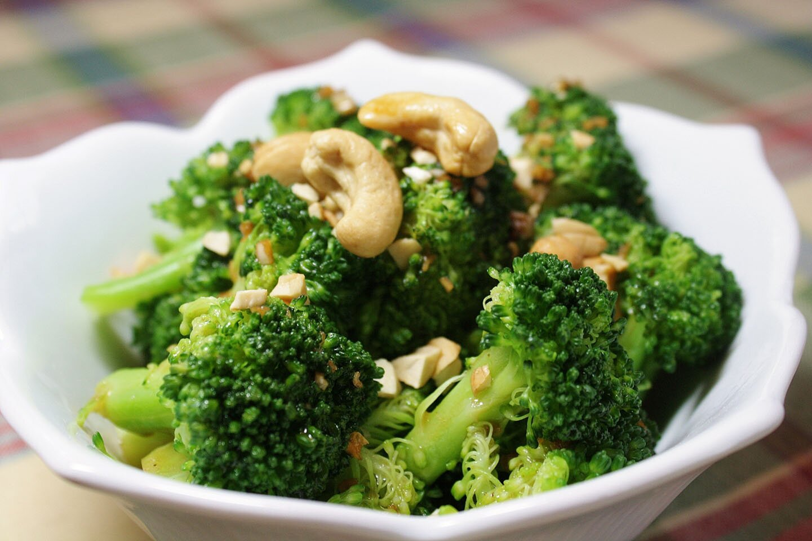

2 red and/or yellow bell peppers, seeded and diced
4 cloves garlic, minced
1 ½ teaspoons fennel seeds, crushed
2 large zucchini, diced
¼ cup finely chopped fresh basil
2 tablespoons finely chopped fresh thyme
Salt & freshly ground pepper, to taste
2 tablespoons finely chopped fresh parsley
Directions
Preheat oven to 350 degrees F.
Heat 1 tablespoon oil in a Dutch oven over medium heat.
Add onions and bell peppers; cook, stirring occasionally, until the
vegetables begin to brown, 8 to 10 minutes. Add garlic and fennel seeds;
cook, stirring, until fragrant, about 1 minute more. Transfer the vegetables
to a large bowl.
Add 1 1/2 teaspoons oil to the pot. Add eggplant and cook,
stirring frequently, until browned in places, 7 to 8 minutes. Transfer to the bowl with the vegetables.
Add the remaining 1 1/2 teaspoons oil to the pot. Add zucchini and
cook, stirring frequently, until browned in places, about 5 minutes. Add tomatoes, basil,
thyme and the reserved vegetables and bring to a simmer. Cover the pot and transfer to the oven.
Bake the ratatouille, stirring occasionally, until the vegetables are tender,
35 to 45 minutes. Season with salt and pepper. Serve hot or at room temperature.
Garnish with parsley before serving.
Nutrition Information
Amount Per Serving
Calories
80
protein
2.5g
carbohydrates
11.9g
dietary fiber
3.7g
sugars
6.4g
fat
3.4g
saturated fat
0.5g
vitamin a iu
2134.6IU
vitamin c
63.7mg
folate
47.2mcg
calcium
39.6mg
iron
0.9mg
magnesium
33.9mg
potassium
541.3mg
sodium
26.6mg
thiamin
0.1mg
Garlic-Butter Broccoli

Ingredients
1 bunch broccoli (1 pound), cut into small pieces, stalks peeled and thinly sliced (about 6 cups)
2 tablespoons unsalted butter
1 garlic clove, minced
¼ teaspoon kosher salt
Freshly ground black pepper
Directions
Cook the broccoli in lightly salted boiling water until crisp-tender, 2 to 4 minutes.
Drain. Add the butter and garlic to the saucepan and cook until the garlic is softened,
1 to 2 minutes. Toss with the salt and a few grinds of pepper.